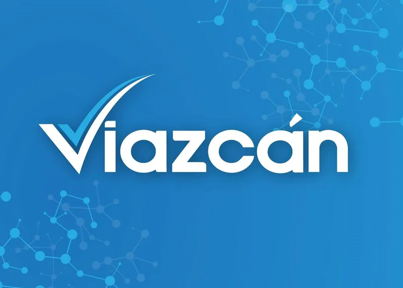
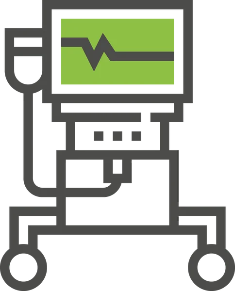
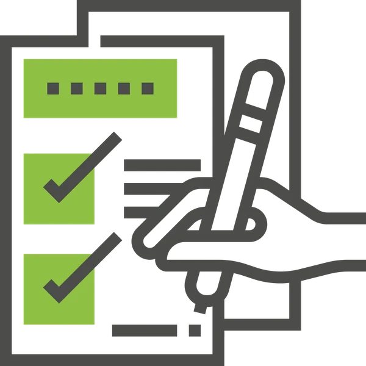
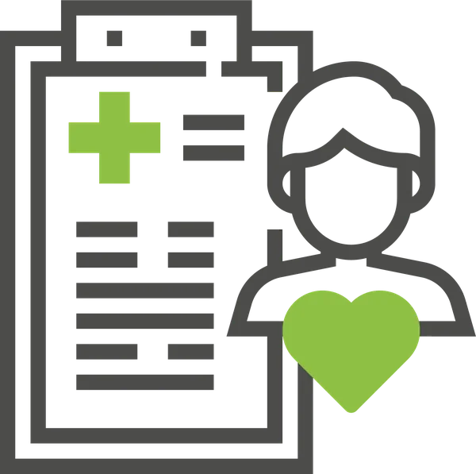

En el Centro de Estudio de Diagnostico Viazcán, nos preocupamos por la salud de los oaxaqueños,
por ello, ofrecemos nuestros servicios como Laboratorios, Ultrasonidos, Rayos X, Tomografias,
Resonancias, Servicio Dental y Estudios Especiales.
A lo largo de estos años, en corporativo de estudios médicos viazcan nos hemos dedicado a realizar un cúmulo de esfuerzos
que redunden en beneficio de los pacientes, es así que en el día a día, un equipo de profesionales genera las condiciones
para proporcionar un servicio integral y de calidad.

Contamos con tres salas de rayos x donde se realizan todo tipo de estudios radiológicos simples y contrastados (Urografías Excretoras, Colon por Enema, Series Gastroduodenales, Colangiografías por sonda en T, Histerosalpingografías). Las tres salas se utilizan simultáneamente para acelerar la atención de los pacientes.

Tenemos un Tomografo Multicorte de 4 cortes, el cual cuenta con inyector automatizado para la realización de estudios vasculares, además de poder realizar tomografías de gran resolución de todo el cuerpo (cráneo, abdomen, tórax, huesos, etc.) con reconstrucciones en tercera dimensión, multiplanares, que mejoran la visibilidad de las lesiones que los pacientes presentan.

Sistema de análisis avanzado de imágenes médicas que nos permite almacenar todos los estudios realizados en nuestro gabinete, para hacer un archivo radiológico de cada paciente, además que se pueden visualizar todas las imágenes de todos los equipos y poder hacer mediciones de las lesiones, reconstrucciones en tercera dimensión, multiplanares, y otros formatos de suma importancia para el diagnóstico final del paciente.